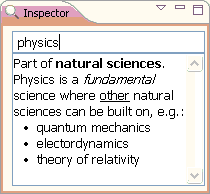
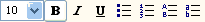
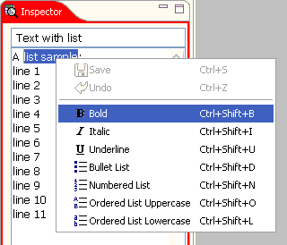
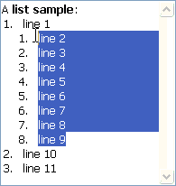
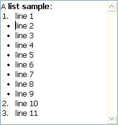
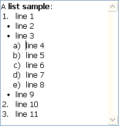
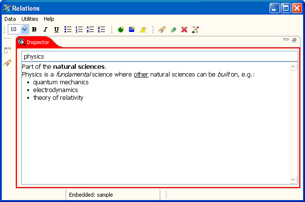

To make the text you add to an item more readable, you can add styles to the text. The Relations application allows you to format the text you write with bold, italic or underline style and to arrange lists with bullets (for unordered lists), numbers, uppercase or lowercase characters for ordered lists.

Styled text in inspector field.
To format the text you've entered, you can either use the text style buttons in the toolbar, the text field's context menu or short cuts.
|
 |
 |
Select the text to format and click the desired style.
You can create lists containing sublists (nested lists).
|
 |
 |
 |
Select the list items for the sublist. Be careful to mark whole lines only. (It's best to mark the lines for the sublist from the end up to the start of the sublist's first line.) To create a sublist of the same type, you can click the Tab key. For a sublist of different type, choose the according style e.g. from the style buttons.
You can indent the list further by clicking the Tab key. Clicking Shift + Tab will remove the sublist.
Tip: You can easily enlarge e.g. the inspector view by double clicking the view's tab (in order to facilitate text editing and formatting). Double clicking the enlarged view's tab again will put the view to the former size and position.

Enlarged inspector view